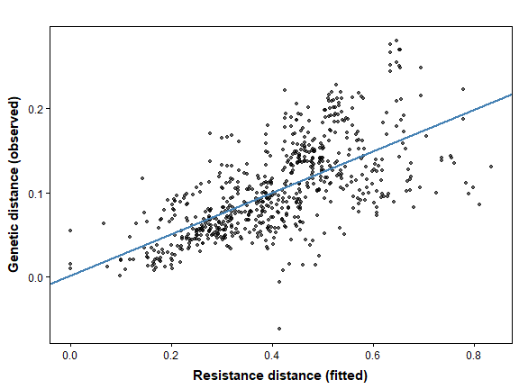
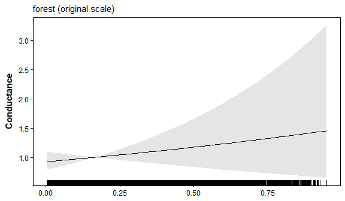
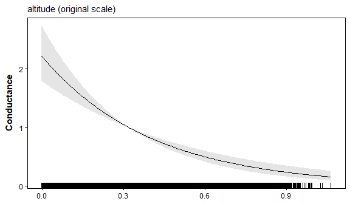
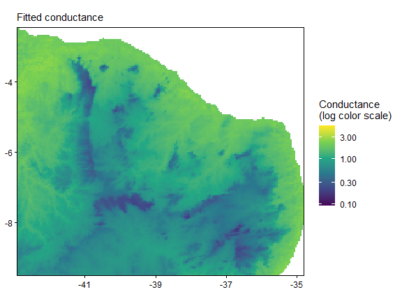

03. Pairwise Genetic Distances with MLPE
Bill Peterman
Source:vignettes/v03-mlpe-pairwise-distance.Rmd
v03-mlpe-pairwise-distance.RmdThe displayed results and figures in this guide were computed from
the executable R Markdown source shipped with the package. Routine
package checks use these precomputed results to keep the CRAN check time
modest. To rerun every code chunk, copy
system.file("vignette-source", "v03-mlpe-pairwise-distance.Rmd", package = "terradish")
to a writable directory and render that copy with
rmarkdown::render().
Goal. Fit a landscape conductance model to a
pairwise genetic distance matrix, such as
,
and read every part of the output. Use this workflow when you start from
distances rather than genotypes. If you have not read vignette("v01-getting-started", package = "terradish"),
start there; it explains the conductance graph, and this guide covers
what changes when the response is a pairwise distance.
When to use MLPE
MLPE, the maximum likelihood population effects model of Clarke, Rothery and Raybould (2002), treats each pairwise genetic distance as a linear function of the resistance distance between two sites:
Here
is the resistance distance through the conductance graph, and the errors
of two pairs that share a site, such as
and
,
are correlated. That correlation is why ordinary regression on pairwise
distances overstates the evidence: the
pairs are not independent observations. Use
measurement_model = mlpe for
,
(one minus the proportion of shared alleles), Nei’s distance, or
individual-based distances. Unlike the Wishart models, MLPE needs no
nu, because it estimates its own residual variance.
Load and inspect the data
The melip data hold pairwise
among 37 populations of Melipona stingless bees in northeastern
Brazil, with altitude and forest cover rasters.
library(terradish)
library(terra)
data(melip)
# Rasters and points are stored wrapped; unwrap them before use.
altitude <- unwrap(melip.altitude)
forest <- unwrap(melip.forestcover)
coords <- unwrap(melip.coords)
Fst <- melip.Fst
c(sites = nrow(Fst), pairs = sum(lower.tri(Fst)),
negative_pairs = sum(Fst[lower.tri(Fst)] < 0))
#> sites pairs negative_pairs
#> 37 666 2
range(Fst[lower.tri(Fst)])
#> [1] -0.06175281 0.27973199
tryCatch(check_distance_response(Fst), error = conditionMessage)
#> [1] "`S` must be nonnegative within the requested tolerance; minimum entry is -0.061753."How to read the output. There are 37 sites and 666
pairs. Two
estimates are slightly negative, which unbiased estimators produce when
true differentiation is near zero. MLPE keeps them as they are.
check_distance_response() rejects the matrix because a
valid squared distance cannot be negative, so the Wishart distance model
generalized_wishart is not an option here; MLPE is.
Build the conductance graph
x <- c(forest, altitude)
names(x) <- c("forest", "altitude")
x <- scale_covariates(x) # mean 0, SD 1; records each layer's center and scale
# saveStack = TRUE (the default) keeps that record with the graph for plot axes.
surface <- conductance_surface(x, coords, directions = 8, saveStack = TRUE)
#> Warning: Two or more focal sites share a raster cell; use a finer raster or
#> review the site coordinates.
nrow(surface$x) # number of raster cells in the graph
#> [1] 22443
shared <- which(duplicated(surface$demes) | duplicated(surface$demes, fromLast = TRUE))
shared # sites that fall in the same raster cell
#> [1] 21 22 26 27 32 35How to read the output. The graph has 22,443 land cells. The warning flags that 6 sites fall in 3 shared cells, two sites per cell, so the resistance distance between the two sites in each cell is zero. Their observed values are small (0.01 to 0.06), so keeping them is reasonable here. With your own data, use a finer raster or combine sites that share a cell. These rasters are in longitude and latitude, so cells are about 5 km across rather than a fixed distance; use a projected raster in your own study.
Fit candidate models
Fit a uniform-conductance baseline, a forest model, and a forest plus altitude model to the same response and graph.
control <- NewtonRaphsonControl(maxit = 200, ctol = 1e-8, ftol = 1e-8)
fit_ibd <- terradish(Fst ~ 1, surface, measurement_model = mlpe, control = control)
fit_forest <- terradish(Fst ~ forest, surface, measurement_model = mlpe, control = control)
fit_full <- terradish(Fst ~ forest + altitude, surface,
measurement_model = mlpe, control = control)
aic_table(list(fit_ibd, fit_forest, fit_full),
mod_names = c("IBD", "forest", "forest + altitude"))
#> model K AIC Delta_AIC AIC_wt Cum.wt loglik converged
#> 3 forest + altitude 6 -4298.770 0.0000 1 1 2155.385 TRUE
#> 2 forest 5 -4224.430 74.3394 0 1 2117.215 TRUE
#> 1 IBD 4 -4174.217 124.5533 0 1 2091.108 TRUE
#> boundary
#> 3 FALSE
#> 2 FALSE
#> 1 FALSEHow to read the table. converged must
be TRUE for every model. The uniform model is isolation by
distance (IBD) on the graph: genetic distance grows with separation, but
every cell is equally easy to cross. Lower AIC is better, and models
within 2 units of the best have comparable support. Forest improves on
IBD by 50.2 AIC units, and adding altitude improves on forest by a
further 74.3. MLPE is fitted by maximum likelihood, not REML, so AIC can
compare conductance formulas fitted to the same distance matrix and
graph.
Read the MLPE summary
Start with the one-covariate model, where each part is easiest to see.
summary(fit_forest)
#> Conductance surface with 22443 vertices (37 focal) estimated by maximum likelihood
#> Call: terradish(formula = Fst ~ forest, data = surface, measurement_model = mlpe,
#> control = control)
#>
#> Loglikelihood: 2117.215 (5 degrees freedom)
#> AIC: -4224.43
#>
#> Number of function calls: 12
#> Number of optimization steps: 4
#> Convergence: converged | projected gradient: 3.94e-10
#> Norm of gradient at MLE: 3.943046e-10
#>
#> Nuisance parameters (conditional on fitted conductance surface; measurement-model scale):
#> Estimate Std. Error Lower 95% Upper 95%
#> alpha -0.034743 0.007646 -0.049730 -0.019757
#> beta 0.289833 0.008885 0.272419 0.307247
#> tau 6.669878 0.142274 6.391027 6.948730
#> rho 0.324430 0.249130 -0.163856 0.812715
#>
#> Coefficients:
#> Estimate Std. Error z value Pr(>|z|)
#> forest 0.55659 0.08681 6.412 1.44e-10 ***
#> ---
#> Signif. codes: 0 '***' 0.001 '**' 0.01 '*' 0.05 '.' 0.1 ' ' 1The Coefficients table holds the conductance estimate.
The Nuisance parameters block holds the MLPE regression, on
the scales below.
| Parameter | Where it appears | What it measures |
|---|---|---|
forest (theta) |
coef(fit) |
Change in log conductance per SD of forest cover |
alpha |
summary(fit)$phi |
Expected at zero resistance distance |
beta |
summary(fit)$phi |
Increase in per unit of resistance distance |
tau |
summary(fit)$phi, log scale |
Log residual precision; residual SD is
exp(-tau / 2)
|
rho |
summary(fit)$phi, logit scale |
Shared-site correlation is plogis(rho) / 2, between 0
and 0.5 |
phi <- summary(fit_forest)$phi
sd_forest <- attr(x, "terradish_scale")$forest[["scale"]]
c(forest_SD = sd_forest,
conductance_ratio = exp(coef(fit_forest)[["forest"]]),
residual_sd = exp(-phi[["tau"]] / 2),
shared_site_correlation = plogis(phi[["rho"]]) / 2)
#> forest_SD conductance_ratio residual_sd
#> 0.17725050 1.74470577 0.03561675
#> shared_site_correlation
#> 0.29020170
exp(confint(fit_forest)) # 95% interval for the conductance ratio
#> 2.5 % 97.5 %
#> forest 1.471746 2.06829How to read the output. One SD of forest cover is
0.18 (a proportion), and each SD increase multiplies conductance by
1.74, with a 95% interval of 1.47 to 2.07. beta (0.29) is
the slope of
on resistance distance. Resistance distance has no fixed units, because
the model has no conductance intercept, so compare beta
only within a fit. alpha (-0.035) is the intercept; a small
negative value is an extrapolation to zero resistance, not a predicted
negative
between real sites. The residual SD is about 0.036 in
units. The shared-site correlation, 0.29, says how strongly pairs
involving the same population depart from the fitted line together;
values near the 0.5 ceiling mean site identity explains most of the
residual variation.
Coefficients are conditional on the other terms
cbind(estimate = coef(fit_full), confint(fit_full))
#> estimate 2.5 % 97.5 %
#> forest 0.08470684 -0.09804562 0.2674593
#> altitude -0.49818394 -0.63071816 -0.3656497
anova(fit_forest, fit_full)
#> Likelihood ratio test: chi-square (1 df)
#> Null: ~ forest
#> Alt: ~ forest + altitude
#> logLik Df ChiSq Df(ChiSq) Pr(>Chi)
#> Null 2117.2 5
#> Alt 2155.4 6 76.339 1 < 2.2e-16 ***
#> ---
#> Signif. codes: 0 '***' 0.001 '**' 0.01 '*' 0.05 '.' 0.1 ' ' 1How to read the output. Once altitude enters, the
forest coefficient falls from 0.56 to 0.08 and its interval spans zero,
while altitude is strongly negative: higher cells conduct less. Each
coefficient is the association holding the other term fixed, and the two
estimates share information (their correlation is printed by
summary(fit_full)), so report them together rather than
reading forest alone. The likelihood-ratio test asks whether altitude
improves on forest alone; a chi-square of 76.3 on 1 degree of freedom is
a large improvement in fit. Model-based standard errors from MLPE tend
to be optimistic, though, so check whether the improvement holds for
sites the model has not seen (below).
Check the fit and map conductance
plot(fit_full, type = "fit")
How to read the plot. Each point is a pair of sites.
For a distance response, the horizontal axis is the fitted
resistance distance
,
not fitted
,
and the vertical axis is observed
.
The blue line is an ordinary least-squares line through the points, so
it approximates the
part of the model and is not a 1:1 line. The three points at zero
resistance distance are the site pairs that share a raster cell. Pairs
share sites, so do not treat the scatter as independent points or test
the line’s slope. For observed against fitted
,
plot Fst[lower.tri(Fst)] against
fitted(fit_full)[lower.tri(Fst)].
plot(fit_full, type = "marginal", data = surface)

library(ggplot2)
C <- conductance(surface, fit_full)
maps <- plot(fit_full, type = "surface", data = surface)
maps[[1]] + scale_fill_viridis_c(trans = "log10",
limits = range(terra::values(C), na.rm = TRUE),
name = "Conductance\n(log color scale)")
How to read the curves and map. Each curve varies
one covariate and averages conductance over the observed values of the
other. Conductance falls steeply with altitude and changes little with
forest once altitude is included. On the map, a cell at the landscape
average of both covariates has conductance 1, so values are relative to
such a cell, and equal color steps are equal ratios.
conductance(surface, fit_full) returns the estimate and its
interval bounds as raster layers for your own maps. The color limits
come from all three layers, so maps[[2]] and
maps[[3]] (the lower and upper bounds) can share this
scale.
Does the extra term predict new sites?
Cross-validation leaves out a spatial block of sites, fits each model
to the rest, and scores the held-out block.
terradish_cv_folds() scores only the pairs of sites
within each held-out block, not pairs that join a
training site to a held-out site (see how spatial
cross-validation scores models). terradish_folds()
needs projected coordinates to form spatial blocks, so project the
points only for this step.
folds <- terradish_folds(project(coords, "EPSG:5880"), k = 4)
table(folds)
#> folds
#> 1 2 3 4
#> 12 9 10 6
cv <- terradish_cv_folds(surface,
list(IBD = Fst ~ 1, forest = Fst ~ forest, full = Fst ~ forest + altitude),
folds = folds, model = mlpe, nuisance = "fixed", control = control)
cv$results[, c("model", "fold", "n_test", "loglik_gain", "error")]
#> model fold n_test loglik_gain error
#> 1 IBD 2 9 0.0000000
#> 2 IBD 3 10 0.0000000
#> 3 IBD 1 12 0.0000000
#> 4 IBD 4 6 0.0000000
#> 5 forest 2 9 2.1137410
#> 6 forest 3 10 0.6222252
#> 7 forest 1 12 -1.1101722
#> 8 forest 4 6 -0.1130458
#> 9 full 2 9 1.5581307
#> 10 full 3 10 -28.6872581
#> 11 full 1 12 5.4888750
#> 12 full 4 6 5.7865374
cv$summary[, c("model", "n_folds_ok", "total_loglik", "mean_difference",
"se_difference", "within_one_se")]
#> model n_folds_ok total_loglik mean_difference se_difference within_one_se
#> 1 forest 4 486.7355 0.000000 0.0000000 TRUE
#> 2 IBD 4 485.2227 -0.378187 0.6787381 TRUE
#> 3 full 4 469.3690 -4.341616 8.4769713 TRUEHow to read the output. Each block holds 6 to 12
sites, so a block scores between 15 and 66 within-block pairs, most of
them short-range. With nuisance = "fixed", all parameters
come from the training sites. loglik_gain is the held-out
improvement over the IBD model in the same block; larger is better. The
altitude model gains in three blocks but loses 28.7 units in block 3,
and that single block puts its total below both simpler models.
Read within_one_se as a descriptive tie flag, not a
decision. It is TRUE for all three models, but the standard
error comes from only four blocks that share training sites, so it is a
rough guide. Before you conclude, look at the driving block: which sites
it holds and whether their altitudes fall outside the range of the
training sites. The supported statement is narrow. The strong AIC
support for altitude does not carry over reliably to within-block
prediction in held-out parts of this landscape. Report the altitude
association as conditional and uncertain, and treat forest’s effect as
not separable from altitude with these 37 sites.
Quick reference
library(terradish)
library(terra)
data(melip)
# 1. Scale covariates and build the graph; keep scaling for plot axes.
x <- c(unwrap(melip.forestcover), unwrap(melip.altitude))
names(x) <- c("forest", "altitude")
surface <- conductance_surface(scale_covariates(x), unwrap(melip.coords),
directions = 8, saveStack = TRUE)
# 2. Fit MLPE models to the pairwise distance matrix; no nu is needed.
ctl <- NewtonRaphsonControl(maxit = 200, ctol = 1e-8, ftol = 1e-8)
fits <- list(
IBD = terradish(melip.Fst ~ 1, surface, measurement_model = mlpe, control = ctl),
forest = terradish(melip.Fst ~ forest, surface, measurement_model = mlpe, control = ctl),
full = terradish(melip.Fst ~ forest + altitude, surface,
measurement_model = mlpe, control = ctl))
aic_table(fits, mod_names = names(fits)) # converged; Delta_AIC < 2 ties
# 3. Read one fit: conductance ratio and MLPE nuisance parameters.
summary(fits$forest)
exp(confint(fits$forest)) # conductance ratio per SD
phi <- summary(fits$forest)$phi
exp(-phi[["tau"]] / 2) # residual SD (Fst units)
plogis(phi[["rho"]]) / 2 # shared-site correlation
# 4. Nested test, diagnostics, and maps.
anova(fits$forest, fits$full)
plot(fits$full, type = "fit")
plot(fits$full, type = "marginal", data = surface)
# 5. Held-out prediction with spatial blocks (projected coordinates).
# Scores use only pairs within each held-out block.
folds <- terradish_folds(project(unwrap(melip.coords), "EPSG:5880"), k = 4)
cv <- terradish_cv_folds(surface,
list(IBD = melip.Fst ~ 1, forest = melip.Fst ~ forest,
full = melip.Fst ~ forest + altitude),
folds = folds, model = mlpe, nuisance = "fixed", control = ctl)
cv$summary # within_one_se is a descriptive tie flag, not a decisionSummary of key functions
| Function | Purpose |
|---|---|
check_distance_response() |
Test whether a distance matrix is a valid squared distance for the Wishart models |
scale_covariates() |
Standardize raster layers and keep their scaling |
conductance_surface() |
Build the graph and locate the sampled sites |
terradish(..., measurement_model = mlpe) |
Fit conductance and MLPE parameters to a distance matrix |
aic_table(), anova()
|
Compare models fitted to the same response and graph |
summary(), coef(),
confint()
|
Read conductance and MLPE nuisance estimates |
plot(), conductance()
|
Diagnostics, conductance curves, and maps |
terradish_folds(),
terradish_cv_folds()
|
Spatial blocks and held-out prediction |
See also
-
vignette("v01-getting-started", package = "terradish"): the conductance graph and a covariance response built from genotypes. -
vignette("v02-wishart-covariance", package = "terradish"): when to use a covariance (Wishart) response instead of MLPE. -
vignette("v04-model-comparison", package = "terradish"): more on AIC, likelihood-ratio tests, and cross-validation. -
vignette("v08-ibe-ibr-workflow", package = "terradish"): adding environmental differences between sites to an MLPE model. -
vignette("v11-large-landscapes", package = "terradish"): solver and cropping options for large rasters. -
?mlpeand?melip: the MLPE likelihood and the example data.
Reference
Clarke RT, Rothery P, Raybould AF (2002). Confidence limits for regression relationships between distance matrices: estimating gene flow with distance. Journal of Agricultural, Biological, and Environmental Statistics, 7, 361-372. https://doi.org/10.1198/108571102320